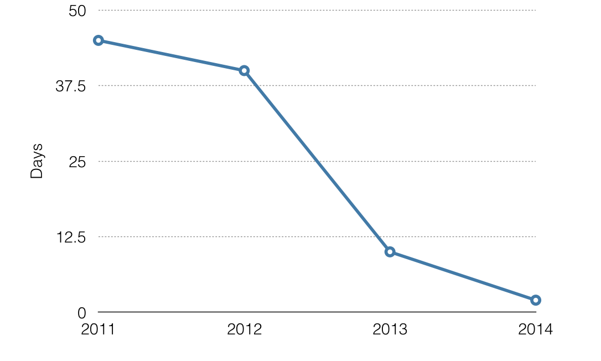

Introduction
This section explains the technical side of my work, on analysis, maps and automation.
The reason why much of my time has gone into the development, improvement and maintenance of the scripts is simple - next time the same task is requested again, I have an existing method, or previously working solution, that could be re-used or easily adapted. This saves time and increases productivity
Wherever possible, I try to automate. In some cases, this obviously represents a poor investment of time, i.e., doing it manually step by step may be quicker. Automation for one-off tasks is over-engineering. I would argue, however, any time spent on making a tool, or spent on mastering a potentially more productive tool is a just investment that brings benefits in the long term.
For example, the different implementations of the comparative analysis have led to a reduced workload significantly. See below a graph depicting the amount of days to do the spatial overlay between the plethora of datasets and new nominations. This frees time for species richness, irreplaceability, improved maps, just to name a few.

Some of the tasks present similar technical challenges. Especially for frequent, recurring tasks, it is imperative that I develop libraries or templates to minimise repetitive work, and that more time is made available for creative tasks and increased productivity.
Geoprocessing libraries
The geoprocessing library (located at geoprocessing\library) is a collection of commonly used functions, which evolve from specific solutions to tasks sharing similarities. Most of them relate to spatial analyses, usually involving the use of the arcpy library, which requires the installation of ArcGIS and a license.
In order to use these libraries, the scripts need to be visible to Python. The easiest way to achieving this is to set system variable PYTHONPATH to include the geoprocessing\library path.
The library consist the follow components:
- Yichuan10.py holds a collection of mostly utility functions (with a humble and long history, starting with ArcGIS version 10, which still reflects in the name of the library). Commonly used functions include the two 'decorators' to track memory usage, and time required for executing functions, and the
GetUniqueValuesFromFeatureLayer_mk2function that finds unique values in any given field in a feature layer. The latter simplifies the common task of finding unique IDs, such as thewdpaidfor the WDPA orid_nofor Red List.
def GetUniqueValuesFromFeatureLayer_mk2(inputFc, inputField):
"""<string>, <string> -> pythonList
can be both feature class or feature layer"""
pySet = set()
with arcpy.da.SearchCursor(inputFc, inputField) as cursor:
for row in cursor:
pySet.add(row[0])
return list(pySet)
-
YichuanDB.py includes a number of useful functions to connect and manipulate postgres databases. For the most part, I use the
ConnectionParameterclass to simplify making connections to the postgres database. Convenient functions likeclean_viewenables testing and debugging of the comparative analyses, which relies on direct access and manipulation of data in the database. -
YichuanM.py evolved from a suite of utility functions originally resided in the
Yichuan10.pythat specifically aimed at tasks relating to the automatic/batch production of maps (use pre-authored map template, to be discussed in detail in the map batch template) -
YichuanRAS.py contains functions that manipulates raster datasets (the rest on vectors) using both the
arcpybut alsogdal, an open source but more lower level alternative. Many of the functions here underpin the analysis of landcover change which was mostly implemented usinggdal -
YichuanSR.py has many functions relating to coordinate systems. For example, the function
get_desirable_srtries to guess a best optimal coordinate system based on the geometry (the input expectsarcpy.Geometryorarcpy.Extentobject). This is useful to identify the most appropriate coordinate system when automating map productions - it's never a good idea to use a global coordinate system for a site scale map - use a specific UTM instead! NB. This function pre-dates a similar CalculateUTMZone function, now included by default in newer releases of ArcGIS.
Map batching template
Making maps quickly and automatically is essential.
Imagine a map production task for a paper. Apart from the initial cartographic process, there will be repeat requests to adjust layout, styles, and minor details that entail massive changes, unknown except to the author of the map. Additionally, Usually, more than one map needs adjusting. Finally when it comes to printing or publishing, it is quite common to expect a different format to the one at hand already. These are legitimate requests, but the time and efforts required to address these challenges tend to go unnoticed.
The map batching template attempts to offer a solution to make this process easier. These templates aim to address the two mundane scenarios below:
- from an ArcGIS Map Document (mxd file) to an exported map of a given format (e.g. pdf file). This is the same to someone clicking the export button and specify some export parameters
- from a single Map Document to a series of maps. Typically, for each feature of a given dataset, there will be an export map.
The underlying technical solution to the above two scenarios involves the Yichuan10.ExportMXDtoMap function, which is a thin, for convenience wrapper around built-in map functions in the arcpy.mapping module.
The process usually involves the below steps:
- pre-author a map (no need to turn on data driven pages)
- ensure there is an index layer with id, and map elements. They need to be specified and referenced in the map template (only applies to the second scenario).
One common task in the first scenario is to export a folder of mxd documents, repeatedly with multiple formats. This could be easily achieved with a loop.
Here is an example to export from a map document to a thumbnail, a map for web, and a map for use in Adobe Illustrator (AI format, for further editing and publication).
The second scenario requires a loop to go through the feature class. Depending on its attributes or geometry, the map will then be different, for instance, in the title, extent indicator, spatial reference or on/off of a particular layer. For example, the scenario may be to create a map per species or per protected areas. In this sense it is less flexible and needs to be adapted to account for unique requirements that cannot be fully captured in a single, reusable template.
For example, the simple map batcher sets a definition query, a spatial reference, scale/extent, and then then export a jpg format map with a given resolution. See the snippet below
exportpng = exportfolder + os.sep + str(each) + '.jpg'
query = '\"wdpaid\" = ' + str(each)
# only the above wdpaid feature visible
layer_index.definitionQuery = query
# set dataframe coordinate system
sr =arcpy.SpatialReference()
sr_string = Yichuan10.GetFieldValueByID_mk2(layer_index, each, value_field='utm')
sr.loadFromString(sr_string)
# load from its attribute
df.spatialReference = sr
df.extent = layer_index.getExtent()
df.scale = df.scale * 1.1
# need to specify a low quality
arcpy.mapping.ExportToJPEG(mxd, exportpng, "PAGE_LAYOUT", resolution = reso, jpeg_quality=60)
N.B. at the end of iteration, it is good practice to clear the definition query by specifying it to empty (e.g. in the above case, layer_index.definitionQuery = '')
Finally, it is not necessary to adapt the map batch template to automate the production of maps. ArcGIS has a built-in tool call data drive pages or Map series in ArcPro. Their use is beyond the scope of this handover. In comparison, data drive pages do not give a fine control, nor the same level of customisation that I required for my map production process.
Richness template
The origin of this template goes back to 2010 when I was tasked with calculating richness (counting number of species) in the global hexagon grid. This forms part of the analysis published in paper titled The Impact of Conservation on the Status of the World’s Vertebrates. I re-wrote and improved in Python from the original code written in VBA (by Nick?).
The aim is to simply count the number of overlaying species in a given base layer, be it hexagons or protected areas. While conceptually simple, the implementation may not be straightforward - the beauty of this implementation in my opinion is two fold:
- only perform an intersection test
- only minimal information is recorded
This means it does not require the computationally intensive calculation of actual intersections (think of st_intersects rather than st_intersection, see PostGIS documentation), and it only records IDs, minimal information needed for subsequent analysis.
The current implementation relies on the iterative arcpy.SelectLayerByLocation_management calls between a species layer and a base layer. For efficiency reasons, the species layer is created within each iteration by arcpy.MakeFeatureLayer_management with a given ID, and deleted after use; on the contrary, the base layer is re-used and resides in the memory persistently, until all iterations are complete. After the base layer is successfully 'selected', a data cursor loops through its record (GetUniqueValuesFromFeatureLayer_mk2 works on a feature layer, and if that layer has a selection, it will only work on the selection) and saved as a list of strings (each representing a species id and a base layer id). It is formatted for eventual export to a csv file.
def species_richness_calculation(id, hexagonLyr):
# make species layer
if type(id) in [str, unicode]:
exp = '\"' + speciesID + '\" = ' + '\'' + str(id) + '\''
elif type(id) in [int, float]:
exp = '\"' + speciesID + '\" = ' + str(id)
else:
raise Exception('ID field type error')
# make layers
arcpy.MakeFeatureLayer_management(speciesData, speciesLyr, exp)
# select by locations
arcpy.SelectLayerByLocation_management(hexagonLyr, overLapOption, speciesLyr)
# record it
hex_ids = GetUniqueValuesFromFeatureLayer_mk2(hexagonLyr, hexagonID)
result = list()
for hex_id in hex_ids:
result.append(str(int(id)) + ',' + str(hex_id) + '\n')
# get rid of layers
arcpy.Delete_management(speciesLyr)
return result
More recently, this template has been improved to utilise parallel processing to reduce time. ArcGIS cannot use more than one core at a time, so the challenge dictates dividing the task into smaller chunks for multiple ArcGIS processes, and then finally stitch together. The first parallel solution simply uses the parallel template, but later solutions incorporate further optimisation adjustment in the template to improve efficiency and add additional functionality. More specifically, it involves:
- Logger. Analysis with large, multi-source spatial data almost inevitably fail.
- Move the making layer logic to the worker. Making layer is expensive (time-consuming) - it is much fast for worker process to have a layer that they could re-use, without having to re-create for each iteration. It's a compromise between keep task-specific logic from the multi-processing template and achieving better efficiency.
The original worker function
def worker(q, q_out):
while True:
# monitoring
if q.qsize() %100 == 0:
print 'Remaining jobs:', q.qsize()
# get and ID from job id queue
job_id = q.get()
if job_id == 'STOP':
break
result = job(job_id)
q_out.put(result)
The adapted worker function. Note the arcpy.MakeFeatureLayer_management and arcpy.Delete_management that would otherwise occur in the species_richness_calculation function.
def worker(q, q_out):
# make layer here to reduce overhead
arcpy.MakeFeatureLayer_management(hexagonData, hexagonLyr)
while True:
# monitoring
if q.qsize() %100 == 0:
print('Time:', datetime.datetime.now().time())
print('Remaining jobs:', q.qsize())
# get and ID from job id queue
job_id = q.get()
if job_id == 'STOP':
break
result = species_richness_calculation(job_id, hexagonLyr)
q_out.put(result)
arcpy.Delete_management(hexagonLyr)
The reduction in the time needed to undertake species richness analysis is significant - not quite linear reduction with the increase of CPU cores, but for my computer of 6 cores (12 threads) when specifying 10 worker process, it sees 7-8 times improvement. For example, the annual richness calculation itself for nomination + existing WH sites takes less than 3 hours, a previously unthinkable performance.
Furthermore, due to its generic use case, attempts are being made to facilitate a uniform overlapping/binning process, with promising potentials.
For example, by running both the richness calculation between WDPA and the global hexagon grid, and between RedList and the global hexagon grid, the intersection between WDPA and RedList could be easily obtained by using the grid as a look up table. This eliminates the need for complicated spatial overlays. Any further calculations have now reduced to non-spatial tabulation/pivot tables.
The added benefits also include deferring decisions on groupings (for example, threatened species, or country/regional level statistics) towards a later time without re-doing the spatial overlay. This requires analysis be designed in the lowest possible granularity, that allows separation.
For example, if a decision to select species range based on presence, origin and seasonality is to be deferred, the analysis must use the row id (usual fid) instead of the species id id_no. This is because id_no will make no effort to separate between polygons with presence 1 or presence 2 - it only differentiates species
The biodiversity for food and agriculture analysis/BFA FAO analysis is a good example with this thinking in mind(script)
Parallel template
The idea for this template comes from the need to speed up slow-running processes. In the old days, the richness calculation can be painstakingly slow: cutting the tasks to smaller chunks to run over a number of machines over a number of days is not a pleasant experience. Even with a small subset of protected areas, running for all Red List species remains a challenge.
One of the bottleneck was that of the single process nature of ArcGIS Desktop - it does not take advantage of modern multi-core computers. The parallel template then started as a way of using Python to deploy multiple ArcGIS processes to distribute workload automatically.
The process goes like: 1. Create an input pipe containing a list of unique IDs. Each ID represents a piece of data 2. Create an initially empty output pipe hosting result (will come from the worker processes) 3. Create a number of worker processes, that actively get data from IDs in the input pip 4. Create a worker process, that listens actively for get results from the output pipe and then processes them (write to an output file) 5. The main function manages the pipes: distributes work, logs and waits for completion
This is the link to the template
Notably, it needs to add the text string 'STOP' (or for that matter any flag signal would do as long as it is what the worker process would watch out for) to the input queue.
# Add queue of a list of ids to process
q = get_queue()
# setup and run worker processes
p_workers = list()
for i in range(WORKER):
print 'Starting worker process:', i
p = multiprocessing.Process(target=worker, args=(q, q_out))
p_workers.append(p)
# start
for p in p_workers:
p.start()
# add stop flag to the queue
for p in p_workers:
q.put('STOP')
The worker process then remains alive until it sees the 'STOP' signal to terminate.
def worker(q, q_out):
while True:
# monitoring
if q.qsize() %100 == 0:
print 'Remaining jobs:', q.qsize()
# get and ID from job id queue
job_id = q.get()
if job_id == 'STOP':
break
result = job(job_id)
q_out.put(result)
New data analysis process
It is not really 'new' - but I still have not seen a wide adoption of this novel process being applied in conservation analysis at IUCN or WCMC.
This is an improved work flow that I increasingly use. Typically it begins with a spatial analysis, but only once. All subsequent analyses and visualisation then take place within a Jupyter notebook. For routine analyses, this process seems to work very well, as long as the initial spatial analysis is designed in such a way (with the smallest granularity) that allow further interrogation of data with non-spatial analyses.
The benefits of this process:
- less error prone as a result from spatial analysis. Spatial analysis is done only once at the smallest granularity
- further questions of different aggregations can be answered with a non-spatial analysis (as long as the scale is higher than what's used in the spatial analysis)
- methodology is fully open, and reproducible with little effort (apart from the initial spatial analysis)
- the entire analytical process: data cleaning, analysis, and visualisation is fully documented and can easily be shared
Example analyses:
- Climate change vulnerability analysis and the writing of report
- World Heritage Outlook 2 analysis
- Biodiversity for food and agriculture
- Wilderness analysis and the writing of methodology
- ICCA species richness
ArcGIS and Anaconda
Of course, there is no reason why the spatial analysis should be excluded from this process. Thus, the entire work flow of data, analysis and result could be theoretically included in a single workspace such as a Jupyter notebook.
The main challenge is for the generic Python and its libraries to talk to ArcGIS and vice versa. The problem is that ArcGIS uses a specific version of python and its numerical libraries, which cannot be updated without breaking the ArcGIS installation (when using arcpy for example).
Anaconda, the most popular Python data science platform, can be used to create an environment to satisfy a specific installation of ArcGIS with compatible versions of other libraries.
USGS has a useful guide on how to use anaconda modules from the esri Python environment to set up such a environment.
Lastly, this may work for small spatial analyses, however, I would argue for the geoprocessing we require (takes hours or even days) this may not be a good idea. Spatial as such analyse tends to fail a couple of times and require significant back and forth manual experimenting and fixing of data - these would be better off dealt with separately.